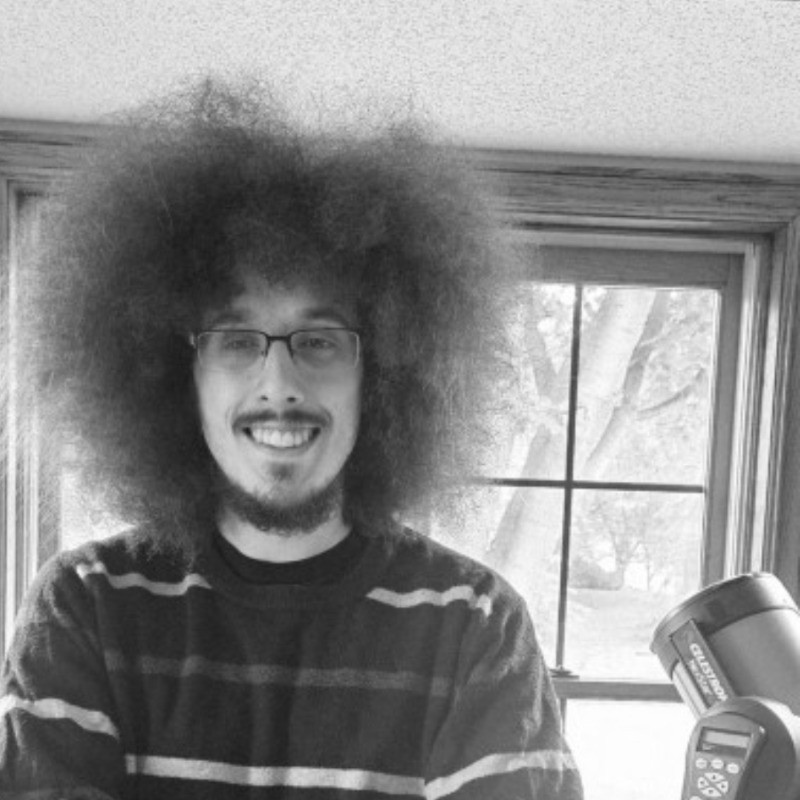

- My Portfolio
- Home
- Projects
- Resume
- Astrophotography
Hi, I’m Alexander Wodarski, and this is my personal site.

I recently graduated from the University of St. Thomas with a degree in Computer Science and a strong interest in cybersecurity. I earned my CompTIA Security+ cerification, which strengthened my foundation in network security, threat management, and security best practices. I'm currently working toward my Cisco Cerified Network Associate (CCNA) certification to deepen my knowledge of networking and infrastructure.
I'm passionate about building a career in cybersecurity and continously expanding my technical skills to better understand how to secury systems and netowrks in an evolving threat landscape.